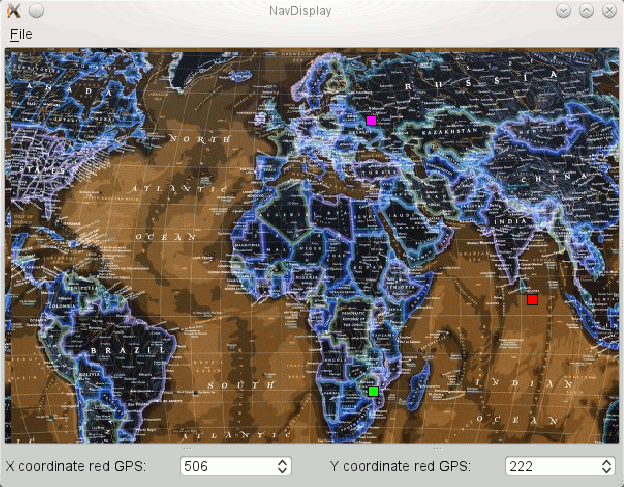

Display example README
To download the code of this example please refer to the SVN repository at $CIAO_ROOT/examples/Display.
Example Description
This example is an imaginary car
(software) instrument assembly which updates the display of
current coordination of the airplane periodically. It consists of
the following three components:
- The RateGen component sends periodic
Pulse events to consumers according to the
rate specified in its attribute Rate, it
allows a client (CORBA client controller) to
start and stop the rate generating event.
- The GPS component interacts with a GPS
hardware. When the GPS component receives
Refresh events from
RateGen, it queries the GPS hardware and updates the internal cached
coordination (so that the current location can be read by accessing the
MyLocation interface) and generates an event
on its Ready port to inform the event
consumers that a new GPS reading is available.
- The NavDisplay component displays the
current location of the vehicle on the windshield. When a
NavDisplay receives an event notifying the
availability of new data on its Refresh port,
it will acquire the current location of the vehicle by querying the interface
connected to the GPSLocation receptacle.
- The NavDisplayGUI directory contains
implementations for a NavDisplay with
graphical interface. To use this graphical interface you need to install qt
libraries (qt4.7) and have qt enabled (qt = 1, qt4 = 1) in your
$ACE_ROOT/bin/MakeProjectCreator/config/default.features.
In some Linux distributions qt is installed by default. There is a
non-commercial version of qt libraries for Windows
here and more information about qt
here.
- If you just want to run the application, just go to the last section of
this page.
- Example view of test running in GUI mode with three GPS components:

The files you will find.
1. The interfaces,
data types and exceptions used by the components of this application are
specified in the
Display_Base.idl file, placed in this example root directory ($CIAO_ROOT/examples/Display_Base).
This is a IDL file and uses the familiar CORBA data types. The lib generated
from Display_Base.idl is linked to all the components of this example.
2. mpc files for each of the components
are available in the components directories. We use the MPC
to generate makefiles and Visual C++ project/solutions files for
all ACE,
TAO and
CIAO libraries.
3. idl files for each component are placed in components directory.
4. The _exec.h and _exec.cpp files are the actual implementation of the components.
5. The NavDisplayGUI_exec directory:
The NavDisplayGUI_exec.cpp is just an executor version
for NavDisplay. In NavDisplayGUI_exec directory you'll find only the the
NavDisplayGUI_exec (and files for the GUI), which can be deployed with the
NavDisplay stub and servant. So, if you deploy the NavDisplay component
using NavDisplay_exec you'll be able to see the application running in the shell
you triggered the NodeDaemon, and if you deploy the NavDisplay component using
NavDisplayGUI_exec a graphical interface will show you a red dot moving over a
map according to the location being generated by GPS component when you start
the application. Notice that the NavDisplayGUI.mpc file includes qt, used for
graphical interface. You must give the right location of qt libraries in your mpc file. For windows also set QT_CFG=4.
6. The controller:
The RateGencomponent is started and stopped by the controller, a CORBA client application.
The controller source is in RateGen directory, so the RateGen.mpc file also
include instructions for the controller
build.
Make
Go to the directory $CIAO_ROOT/examples/Display and do:
$ACE_ROOT/bin/mwc.pl (use -type option if you are using a compiler/IDE other than gnuace -which by default generates GNU makefiles)
For example, using %ACE_ROOT%/bin/mwc.pl -type vc9 if you are using Visual C++ 2008 IDE.
Assemble
Now we can step forward to build the assembly.
In the descriptor subdirectory, you'll find XML descriptor files that describes your deployment plan,
the *deploymentplan*.cdp's:
This file declaratively specifies how the component assembly is
constructed. Specifically, it specifies the component types, component
instances, component connections and implementation artifact
descriptions.
Please make sure that the Modified_Deployment.xsd and XMI.xsd files are in the
Display/descriptors directory.
The former file could be found in $CIAO_ROOT/docs/schema directory.
Run
Finally you are ready to test the application you have made. From different shells in $CIAO_ROOT/examples/Display/descriptors/ directory:
To run in console mode:
- Start NodeManagers (NodeDameon), execution manager and dance_plan_launcher, using the Naming Service
and the deploymentplan the flattened_deploymentplannat.cdp by running
run_test.pl
You can copy and modify the copy to deploy the components in various
different locations to let the application truely "distributed".
After this, components should be deployed successfully.
- The Assembly_Manager is instructed to write the IOR of the RateGen
component to a file called "rategen.ior" in this
directory. You will then need to use a controller program in a
separate shell window to switch on/off the Rate Generator.
Go to the $CIAO_ROOT/examples/Display/descriptor directory and run
run_test_contr.pl
In this script the command $CIAO_ROOT/examples/Display/RateGen/controller
-o starts the application and after a 20 sec stopp the application with $CIAO_ROOT/examples/Display/RateGen/controller
-f
To run in GUI mode with one GPS component:
- Start NodeManagers, execution manager and dance_plan_launcher, using the Naming Service
and the deploymentplan deploymentplanone.cdp by running
run_test_one.pl
After this, components should be deployed successfully.
- The Assembly_Manager is instructed to write the IOR of the RateGen
component to a file called "rategen.ior" in this
directory. You will then need to use a controller program in a
separate shell window to switch on/off the Rate Generator.
Go to the $CIAO_ROOT/examples/Display/descriptor directory and run
run_test_contr.pl
In this script the command $CIAO_ROOT/examples/Display/RateGen/controller
-o starts the application and after a 20 sec stops the Rate generator with $CIAO_ROOT/examples/Display/RateGen/controller
-f
To run in GUI mode with three GPS and RateGen components:
- Start NodeManagers, execution manager and dance_plan_launcher, using the Naming Service
and the deploymentplan deploymentplanmore.cdp by running
run_test_more.pl
After this, components should be deployed successfully.
-
Go to the $CIAO_ROOT/examples/Display/descriptor directory and run
run_test_more_contr.pl
In this script the Rate Generators are activated and after a while are stopped.
To experience in GUI mode (or console mode) with a different number of GPS and RateGen components:
- Add to the deploymentplan.cdp (or flattened_deploymentplannat.cdp) new instances of GPS - and RateGen components.
Change in de deploymentplan the
configProperty: number_of_GPS from the HUDisplay-NavDisplay-comp display instance.
Add the new connections to the deploymentplan.
-
Change the scripts
run_test_more.pl ( or run_test.pl) and run_test_more_contr.pl
for the correct number of components.
-
Run the scripts run_test_more.pl for GUI display or run_test.pl for console display. You will then need to run the
script
run_test_more_contr.pl in a separate shell window to switch on/off the Rate Generator(s).
Email: ciao-users@list.isis.vanderbilt.edu